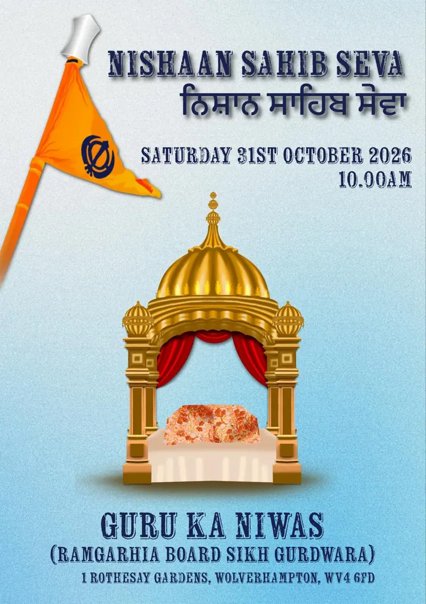

← News & updatesSaturday 31 October 2026
Nishan Sahib Seva
ਨਿਸ਼ਾਨ ਸਾਹਿਬ ਸੇਵਾ
The whole sangat is warmly invited to the Nishan Sahib Seva at Guru Ka Niwas, as our new Nishan Sahib takes its place in front of the Gurdwara.

- When
- Saturday 31 October 2026
10.00am - Where
- Guru Ka Niwas (Ramgarhia Board Sikh Gurdwara)
1 Rothesay Gardens, Wolverhampton WV4 6FD - Who
- Everyone is welcome: the sangat, families, friends and neighbours.
Coming along?
Please cover your head and remove your shoes before entering the Darbar Sahib. If it's your first visit, our first-visit guide explains what to expect. For programme details, please call the Gurdwara on 01902 621177.
Programme
Gurpurab week at Guru Ka Niwas
| Sun 25 Oct, 4.00pm | Sri Akhand Paath Sahib: ArambhCelebrating the Parkash Purab of Dhan Dhan Sri Guru Raam Daas Ji Maharaj |
|---|---|
| Tue 27 Oct, 4.00pm | Sri Akhand Paath Sahib: Bhog |
| Tue 27 – Sat 31 Oct | 5-day Simran Smagam |
| Sat 31 Oct, 10.00am | Nishan Sahib SevaAll are welcome |
| Sat 31 Oct, 4.00pm | Amrit SanchaarWith Amrit Sanchaar Jatha Bhindran (Damdami Taksal UK & Europe) |
| Sat 31 Oct, 6.00pm – 1.00am | Wolverhampton Mahaan Rhensabhi KirtanKirtani jathas from across the UK and abroad; remembering the shaheeds of November 1984 |
| Sat 14 Nov, 5.00pm – 9.00pm | Mahaan Kirtan DarbarMata Sahib Kaur Ji’s Avtar Purab |
Times as published by the organising sevadars and jathas. Please call the Gurdwara on 01902 621177 to check before travelling.